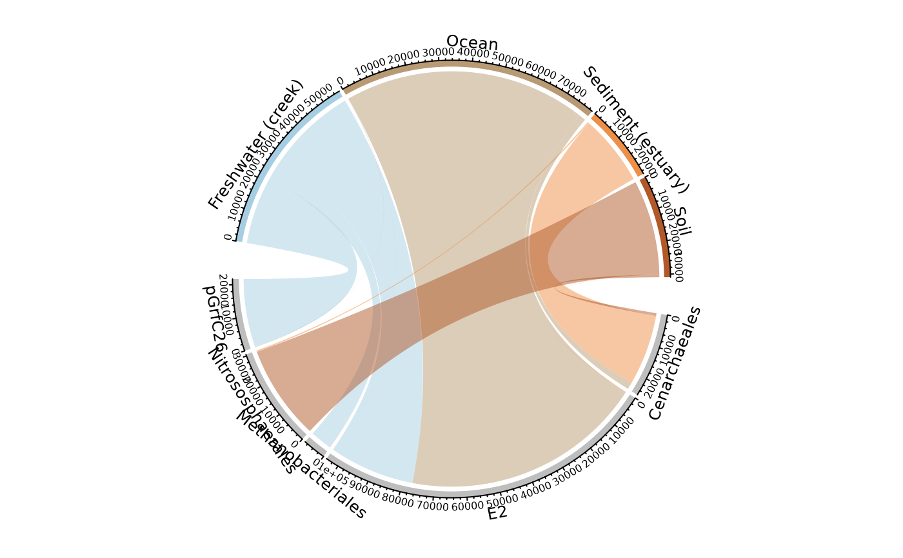
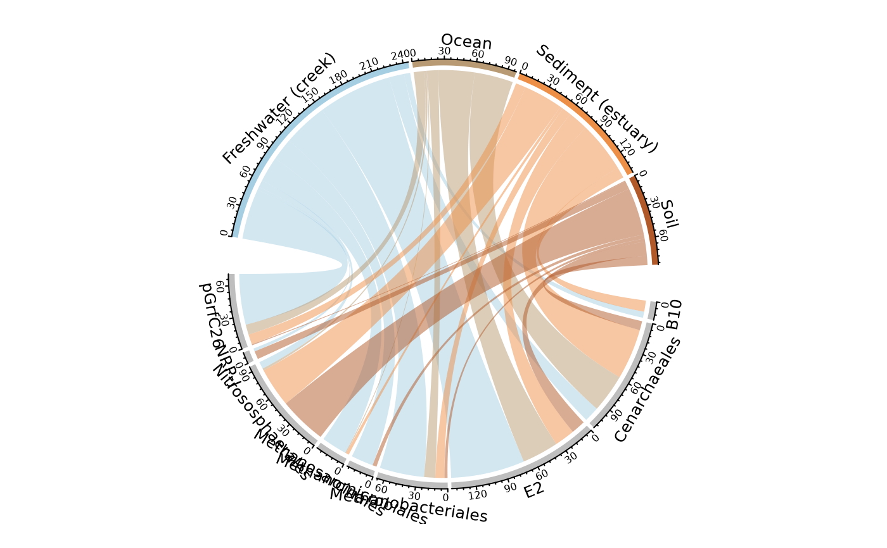
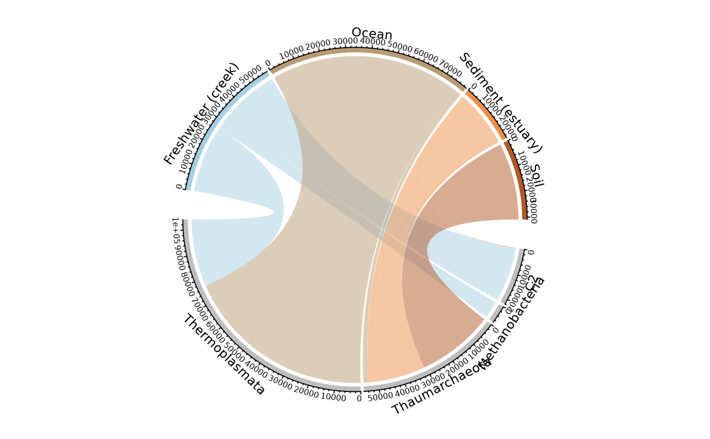

`r lifecycle::badge("maturing")`
otu_circle(
physeq = NULL,
fact = NULL,
taxa = "Order",
nb_seq = TRUE,
rarefy = FALSE,
min_prop_tax = 0.01,
min_prop_mod = 0.1,
gap_degree = NULL,
start_degree = NULL,
row_col = NULL,
grid_col = NULL,
log10trans = F,
...
)(required): a phyloseq-class object.
(required): Name of the factor to cluster samples by modalities.
Need to be in physeq@sam_data.
(Default:'Order'): Name of the taxonomic rank of interest
(Default: TRUE): Represent the number of sequences or the number of OTUs (nb_seq = FALSE)
(logical): Does each samples modalities need to be rarefy in order to compare them with the same amount of sequences?
(Default: 0.01): The minimum proportion for taxon to be ploted
(Default: 0.1) : The minimum proportion for modalities to be ploted
: Gap between two neighbour sectors. It can be a single value or a vector. If it is a vector, the first value corresponds to the gap after the first sector.
: The starting degree from which the circle begins to draw. Note this degree is measured in the standard polar coordinate which means it is always reverse-clockwise.
: Color vector for row
: Grid colors which correspond to sectors. The length of the vector should be either 1 or the number of sectors. It's preferred that grid_col is a named vector of which names correspond to sectors. If it is not a named vector, the order of grid_col corresponds to order of sectors.
(logical): Should sequence be log10 transformed (more precisely by log10(1+x))?
Additional arguments passed on to
chordDiagram or circos.par
A chordDiagram plot representing the
distribution of OTUs or sequences in the different modalities of the factor
fact
data("GlobalPatterns")
GP <- subset_taxa(GlobalPatterns, GlobalPatterns@tax_table[, 1] == 'Archaea')
otu_circle(GP, 'SampleType')
#> Only 4 modalities are plot (44.44%). Use 'min_prop_mod' to plot more samples.
#> Only 5 taxa are plot (45.45%). Use 'min_prop_tax' to plot more taxa

otu_circle(GP, 'SampleType', nb_seq = FALSE)
#> Only 4 modalities are plot (44.44%). Use 'min_prop_mod' to plot more samples.
#> Only 9 taxa are plot (81.82%). Use 'min_prop_tax' to plot more taxa

otu_circle(GP, 'SampleType', taxa = "Class")
#> Only 4 modalities are plot (44.44%). Use 'min_prop_mod' to plot more samples.
#> Only 4 taxa are plot (44.44%). Use 'min_prop_tax' to plot more taxa
